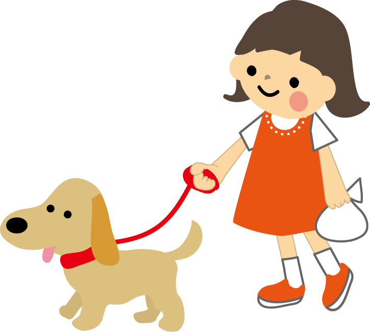

Horarios sugeridos
Una rutina constante ayuda a mantener energía, orden y descanso.
- Mañana: 7:00 AM
- Tarde: 3:00 PM
- Noche: 8:00 PM
Organiza mejor las salidas del día y mantén una rutina que ayude al bienestar físico y emocional de tu mascota.

Una rutina constante ayuda a mantener energía, orden y descanso.
Caminar todos los días mejora la salud y el comportamiento.
Antes del paseo, ten en cuenta estos cuidados básicos.